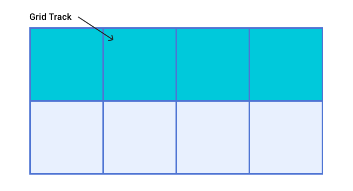
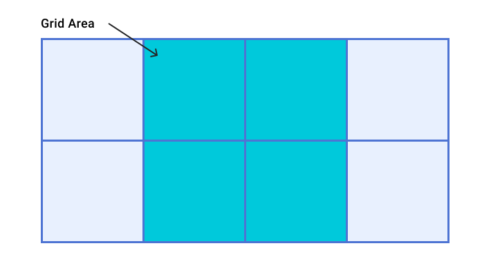
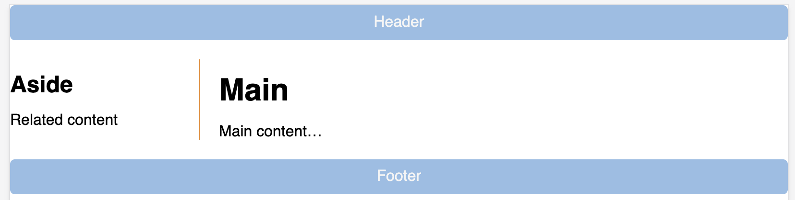
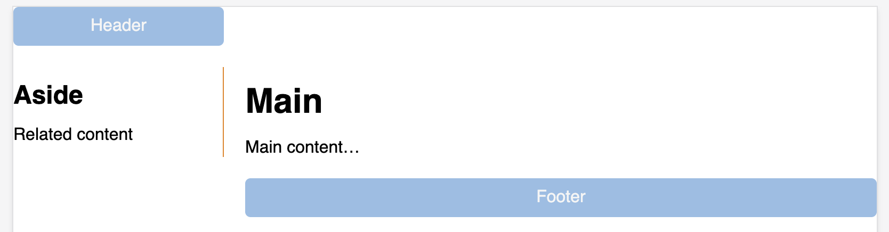

HCDD 340
Grid II
Recap from last class
- Grid terminologies
Grid
- Two dimensional layout
- You can place item to specific location
- Items can be aligned within their area
Grid terminologies
- Lines
- Tracks
- Cells
- Gaps
Grid Lines
- Horizontal and vertical lines
- Line number starts from one
- follows writing mode
- script direction

For English, column number is 1 on the left
Tracks
- Space between two grid lines
- Row tracks
- between two row lines
- Column tracks
- between two column lines

Cell
- Smallest intersection area between rows and columns
- Similar to a table or spreadsheet cell

Area
- Spanned over multiple cells

Gaps
- Gutter or alley
- between cells
- Can’t place an item in a gap

Grid
.container {
display: grid;
grid-template-columns: 5em 100px 30%;
grid-template-rows: 200px auto;
}Creates a new grid
Grid columns
.container {
display: grid;
grid-template-columns: 5em 100px 30%;
grid-template-rows: 200px auto;
}3 column tracks with different sizes
Grid rows
.container {
display: grid;
grid-template-columns: 5em 100px 30%;
grid-template-rows: 200px auto;
}2 row tracks with different sizes
How many columns here?
grid-template-columns: 200px repeat(2, 1fr 2fr) 100px;- 6 columns
- 200px, 1fr, 2fr, 1fr, 2fr, 100px
- You can mix
repeatwith other sizes
minmax function
- Sets a minimum and maximum size for a track
- Adapts to different screen sizes
minmax for responsive
design
minmax(auto, 1fr);
Take at least minimum of content width but grow if there is space
Create as many columns as possible
- A common pattern
- Can’t pre-specify the number of columns
- available space is different across devices
- Use
auto-fit
Create as many columns as possible
Using auto-fit
.container {
display: grid;
grid-template-columns: repeat(auto-fit, minmax(230px, 1fr));
}repeat function
/* equivalent rules */
grid-template-columns: 1fr 1fr 1fr;
grid-template-columns: repeat(3, 1fr);repeat function
- Two arguments
- Number of times to repeat
- Entity to repeat
fr unit
- One fraction of the available space
- Allows flexible sizing
Today
- Placing items in grids
Auto placement (default)
- Items are placed one per cell
- In the same order as in the code
- Default placement is along the rows
- For column placement:
grid-auto-flow: column;
- For column placement:
Todo
- Open Activity 05
- Place items along the column
Line based placement
- Placing items on specific lines
- For English, column number is 1 on the left
Line based placement
Start and end lines for an item
grid-column-startgrid-column-endgrid-row-startgrid-row-end
Line based placement
Start and end lines for an item
.item {
/* start at column line 1 */
grid-column-start: 1;
/* end at column line 4 */
grid-column-end: 4;
/*start at row line 2 */
grid-row-start: 2;
/* end at row line 4 */
grid-row-end: 4;
}Shorthand for line placement
grid-columngrid-column-start/grid-column-end
grid-rowgrid-row-start/grid-row-end
Shorthand for line placement
.item {
grid-column-start: 1;
grid-column-end: 4;
grid-row-start: 2;
grid-row-end: 4;
}=
.item {
grid-column: 1 / 4;
grid-row: 2 / 4;
}Todo
- Open Activity 06
- Update
grid-columnandgrid-row

Negative number for line placement
- You can use negative number
- -1: the end column or row
- count inwards using negative values
Todo
- Open Activity 06
- Update
grid-columnandgrid-row- using negative values
grid-template-areas
- Name areas of the grid
- Place items onto those named areas
- Very useful
grid-template-areas
.container {
display: grid;
grid-template-columns:
repeat(4,1fr);
grid-template-areas:
"h h h h"
"s c c c"
"s f f f";
}header {
grid-area: h;
}
.sidebar {
grid-area: s;
}
.content {
grid-area: c;
}
footer {
grid-area: f;
}grid-template-areas
- Every cell must be filled
- repeating name will span cells
.(period) is for empty cell
Todo
- Open Activity 07
- Add
grid-template-areas
Todo

. (period) is for empty cell
Aligning items in Grid
Similar to flexbox!
- Column axis alignment
align-selfandalign-items
- Row axis alignment
justify-itemsandjustify-self
Nesting grids
- Making a child item a
subgriddisplay: grid- Define other grid properties (columns, rows, …)
- See an example here
Todo
- Go to Grid Garden
- Complete levels
- Discuss with your group members
Assignment 2
- Will be published tomorrow
- Due by September 30th